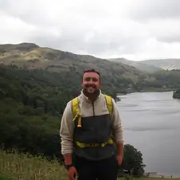

St George’s Weybridge × South East Rivers Trust
The River Bourne Project is a long-term environmental initiative at St George’s Weybridge, working in partnership with the South East Rivers Trust. It allows students to take part in real-world conservation work while developing a deeper understanding of river ecosystems.
The aim of the project is to monitor, restore and improve the health of the River Bourne through hands-on fieldwork, data collection and environmental action.
Riverside Showcase Event
Monday 27 June — 4:30pm
Location: The Hut by the Chapel Tennis Courts
Students will be presenting their river restoration work, including water quality testing results, habitat observations and explanations of how their actions are helping to improve the River Bourne.
The event will showcase the progress of the project and highlight how students are making a real environmental impact.
The River Bourne flows through the St George’s Weybridge grounds and is an important natural feature of the site. It supports a rich variety of wildlife including fish, insects, birds, amphibians and plant life.
The river is constantly changing due to rainfall, flow levels, seasonal variation and surrounding land use. However, it also faces pressures such as erosion, pollution, habitat loss and invasive species.
Through the River Bourne Project, students work with the South East Rivers Trust to monitor and improve the river’s condition.
Students take part in real environmental fieldwork, acting as young scientists working on a live ecosystem. They collect and analyse data while helping to understand the health of the river.
Students gain experience in:
The project builds teamwork, leadership, communication and problem-solving skills while encouraging responsibility for the environment.
Education and Engagement Officer – Working with Communities

Oli is a qualified teacher with a degree in Geology and Physical Geography. He has experience teaching students from Key Stage 3 through to A Level, and has spent the last four years working as an outdoor educator, delivering sessions that connect young people directly with nature.
He supports students in understanding river ecosystems through practical fieldwork, data collection and outdoor learning experiences.
In his spare time, he enjoys walking, being near water, and supporting his local Scout group on outdoor activities such as paddleboarding.
This project is about more than studying a river — it is about actively improving it. Every piece of data collected contributes to understanding and enhancing the River Bourne’s health.
It turns the school into a living classroom where learning has real and lasting impact.